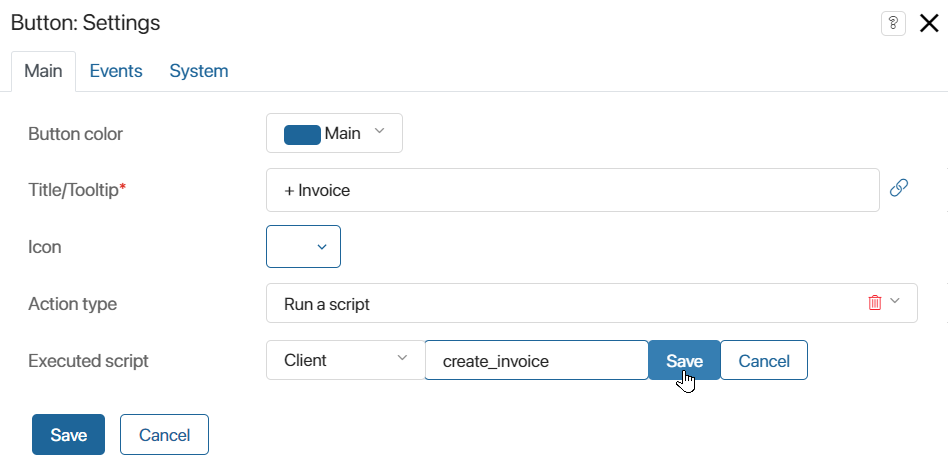

An optional dependency is a tool that allows you to set up a link between a component (widget, module, or business process) and a workspace or custom module without making them interdependent. It means that a component can access data and objects of a selected workspace or module using the global constant Imports, but its operability does not depend on the presence of this workspace or module. Thus, optional dependencies provide flexibility and extensibility in the development and distribution of system components.
Key features of optional dependencies:
- An optional dependency works within a script that accesses another workspace or module using a unique name specified for that workspace or module.
- A global constant
Importsis available in the component’s script. This constant allows the script code to access the objects of the workspace or module with which the optional dependency is set. - Components that use optional dependencies can be exported and imported between different environments or companies without the need to have the linked workspaces or modules in the target environment. This ensures that solutions are easily portable and independent of specific system configurations.
- If the workspace or module a dependency is set up with is absent in the target system, the linked script functions are either not activated or you can configure an error message to be displayed.
Examples of using optional dependencies include creating flexible business processes, widgets, and other system components that can interact with a variety of modules and workspaces without requiring them to be mandatory for the core logic to function. This is especially important for developing extensible solutions, where new functions and modules can be added as needed without reworking existing components.
Add an optional dependency
начало внимание
Enabling optional dependencies and using the Imports constant is by default available in BRIX On-Premises edition starting from system version 2024.2. To use optional dependencies in earlier versions, the system administrator needs to enable the feature flag allowScriptImportsDependencies. For more information, see Modify On-Premises Enterprise parameters and Modify On-Premises Standard parameters.
конец внимание
When you configure an optional dependency in a script, you select which workspace or module you want to access and give it a unique name. This name is then used in the script code to refer to the data and objects of the selected workspace or module.
Read more about how to create optional dependencies in different system components in the following articles:
- For widgets: Designer tabs.
- For business processes: Scripts tab.
- In modules:
- For Script type activity: Script activity.
- For API methods: API methods in modules.
- For the Run script type event handler: Event handling in modules.
After adding an optional dependency, the global constant Imports becomes available in the script. It can be used to access objects of the selected workspace or custom module.
Use the Imports global constant
When you add an optional dependency, you gain access to the global constant Imports. This constant allows you to work with objects within the section, for example, using a script to add a user to the portal or create an application item. Interaction with the module can be done through its configured API methods and actions in business processes.
An example of using involves calling an API method that is in a different workspace in the system:
if (Imports?.documents) {
let result = await Imports.documents.api.validate.call();
// ...
}
When writing a script, keep in mind that a component using the Imports constant can be imported even if the dependency is not found in the company. It is recommended to add a block of code that is executed if the selected workspace or module cannot be accessed. For example, to show a clear error message to the user.
In addition, a script component and a workspace or module with which an optional dependency is set can be exported together as part of a solution.
Read more about exporting components with global constants in Global constants in scripts.
Note: The Imports object is not available in system versions below 2023.11. If you are developing a solution that needs to be compatible with earlier versions of the platform, use the following function at the beginning of the script:
function getImports() {
// Assigning an initial value to a local variable
return typeof Imports !== 'undefined' ? <typeof Imports>Imports : undefined;
}
const __Imports = getImports();
// Further in the code, you can use the variable `__Imports`
if (__Imports?.payment_docs) {
let item = __Imports.payment_docs.app.invoices.create();
}
Example of using an optional dependency
Let’s say a company has the Payment Documents workspace with the Invoices app and the Documents workspace with the Contracts app. Users need to be able to add new invoices from the contract page by clicking a button.
The workspaces are part of different solutions and need to be exported separately.
In this case, you can set up the button to execute a script, set an optional dependency for the component, and access the app from another workspace using the Imports constant. To do this:
- Open the Contracts app page in interface designer and click the Settings > Available items tab.
- Next to the Optional dependencies (available in the Imports object) field, click + Add workspace and select the Payment Documents workspace.
- In the Alias column, set a unique name for the workspace that will be used in the script:
payment_docs. - Go to the Template tab and add a button with the Script type activity to the form. In the Executed script field, create a function that will be called when a user clicks the button.

- Open the function on the Scripts tab and write:
async function create_invoice(): Promise<void> {
if (Imports?.payment_docs) {
const item = Imports.payment_docs.app.invoices.create();
// ...
await item.save();
}
}
- On the top panel of the interface designer, click Save and Publish to make the changes available to users.
Now users can quickly create a new invoice from the contract page.
You can export the Contracts app, the Documents workspace, and the solution they are part of. After that you can import these components into another company. If the company does not have the workspace with which an optional dependency is set, the script linked with the button will not be functional.